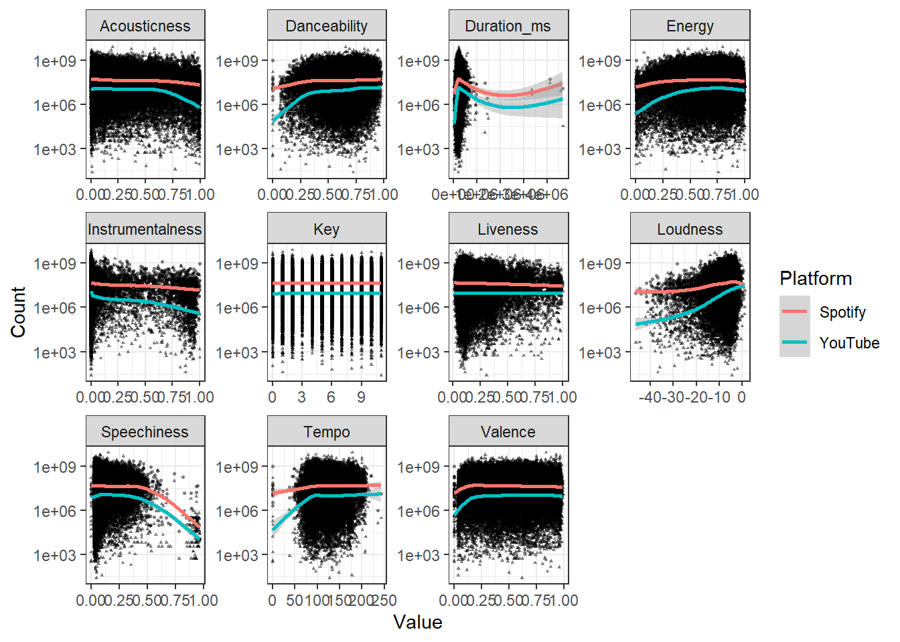
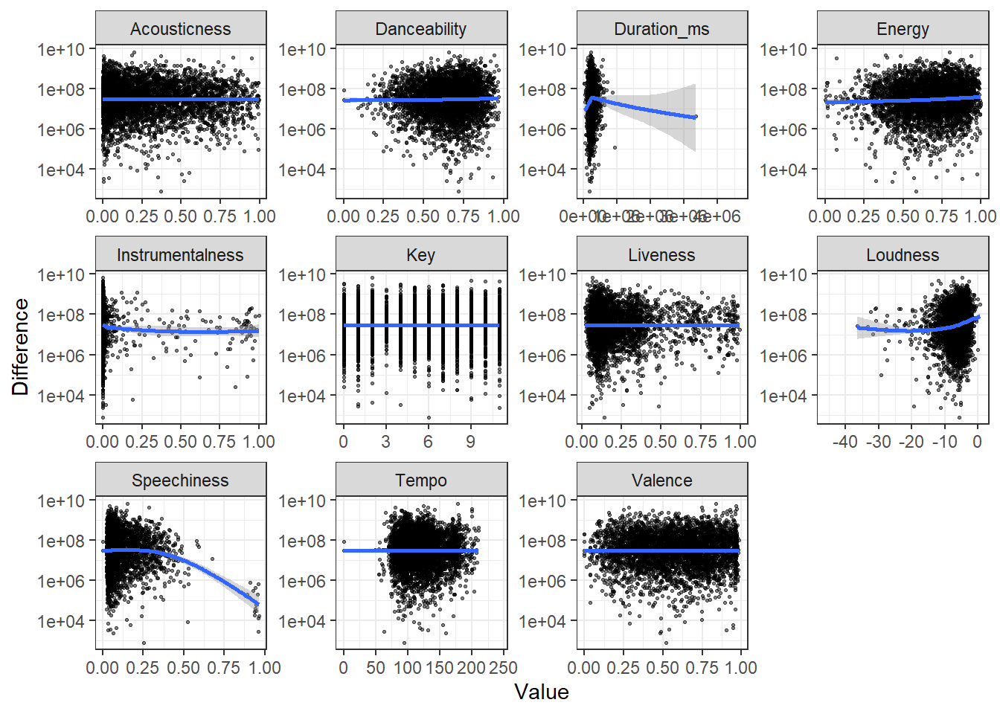

library(tidyverse)
library(ggplot2)
knitr::opts_chunk$set(echo = TRUE)Final Project Assignment#1: Daniel Hannon
final_Project_assignment_1
final_project_data_description
Project & Data Description
Part 1. Introduction
Music has always evolved alongside media and technology. From radio and cassets, to MTV and DVDs, to the present where streaming and internet music videos are the most common ways for people to enjoy their favorite artists. The dataset I am using connects these two mediums. It is a collection of data about songs on Spotify and the popularity of the most popular corresponding music video on Youtube. The data was collected on February 7th, 2023 using an API that interacted with both Spotify and YouTube. It was collected and edited by Kaggle users Salvatore Rastelli, Marco Guarisco, Marco Sallustio. It is in the public Domain and available for free download here on Kaggle
I plan to use this dataset to try to answer questions about whether there are certain elements of a song that make it more likely to be a popular music video. Do videos of singles perform better than album songs? Are more energetic songs more likely to be popular on Youtube? Are there any trends that can be seen for songs that have more Youtube views than Spotify streams? I plan to compare the attributes of the highest Streamed songs to the attributes of the most viewed music videos to see if there are certain qualities that perform better on each platform.
Part 2. Describe the data set(s)
This part contains both a coding and a storytelling component.
Each case in the dataset is a song from Spotify. Each observation is made up of identification data (a unique id, the track name, artist, album, URL on Spotify), then a section on descriptive data about the how the song sounds with measures that Spotify tracks such as the “dancability” of the song along with attributes such as the energy, key, tempo, duration, etc. The last part of the observation is information about the most popular video on Youtube when the title of the song is searched. It has identification data for the video (URL, title, description, channel name, and whether or not it is the official music video) as well as popularity measures (views, likes, comments). The last column of the data is the total number of streams that song has on Spotify, and will serve as the baseline popularity of the song. For our purposes, we will filter all the identifiers of a song besides the Track name and Album type, leaving all of the song measures from Spotify, the official_video flag, and the Stream and View numbers to serve as our popularity measures.
spotify_yt_original <- read.csv("DanielHannon_FinalProjectData/Spotify_Youtube.csv")
#remove all the unnecessary information columns, as well as likes and comments
#for the purposes of this we will use views and Streams as our metrics of popularity because they are the most comparable
spotify_yt_data <- spotify_yt_original %>%
select( c(Track, Album_type, Danceability:Duration_ms, Views, official_video, Stream)) %>%
filter(!is.na(Views) & !is.na(Stream))
#filter out any songs that don't have any data about views or streams
# Original dataset has dims 20718 x 28
dim(spotify_yt_data) # After removing NA datapoints dims are 19692 x 16[1] 19692 16spotify_yt_data %>%
select(Track) %>%
n_distinct(.) #16993 unique tracks[1] 16993spotify_yt_original %>%
filter(grepl("El Ultimo Adiós - Varios", Track)) #certain tracks featuring many artists are repeated because the tool that scraped for them took the top ten tracks from various artists. In this example 24 listings of the same song exist, but not all of them have the same Youtube video attached. They all contain the same name, and all of the song data is the same Right now the data has a lot of repeat tracks, about 2.7 thousand, and a big part of tidying the data is going to be cleaning up the repeat tracks, without throwing away tracks that simply have the same name as another track.
#|label: remove duplicate tracks
spotify_yt_data <- spotify_yt_data %>%
group_by(Duration_ms, Energy, Tempo, Danceability, Valence) %>% #Group the songs that are duplicates
arrange(desc(Views))%>% #We want to study the highest viewed video
slice(1) %>% #for each track so we slice one
ungroup() #Ungroup for further analysis
dim(spotify_yt_data)[1] 17960 16The above code chunk shows how I remove all the repeated songs in the data set. I saw that tracks tat were scrapped twice had identical Spotify reported values. I wanted to make sure I was removing as many duplicates as possible without removing any non-duplicate songs that happen to have the same name as another song. I experimented with different values to group the data by and reported the dimensions of the corresponding data frame.
| Value Paired with Track | # of Observations |
|---|---|
| None (Track Alone) | 16993 |
| Stream | 18110 |
| Energy | 17961 |
| Danceability | 17959 |
| Duration | 17961 |
| Valence | 17961 |
| Tempo | 17964 |
However, I found When using Duration_ms, Valence, Danceability, Tempo and Energy without grouping by track we get 17960 observations. The one difference is most likely in the case of Taki Taki (with Selena Gomez, Ozuna & Cardi B) which is repeated with all the same values but with the track name Taki Taki (feat. Selena Gomez, Ozuna & Cardi B). The difference between feat. and with makes this register as two separate tracks when you group_by track. This song has enough views on it’s YouTube video (39th most in the dataset) that it should not be counted twice, so we will group_by using Duration_ms, Valence, Danceability, Tempo and Energy without grouping by track.
I kept the track with the highest corresponding viewed YouTube video for any songs that were repeated.
spotify_yt_data %>%
select(Track) %>%
summarytools::dfSummary(varnumbers = FALSE,
plain.ascii = FALSE,
style = "grid",
graph.magnif = 0.50,
valid.col = FALSE)#This shows that there are still duplicate tracks, but these might be different songs with the same name
spotify_yt_original %>%
filter(Track == "Heaven") # Quick sanity check: Heaven is the most repeated track now, but upon inpsecting the data, the values are different enough that they all appear to be unique songs.Above is a quick sanity check to see if any repeated track values are the same song scrapped twice, or different songs with the same title. My check showed the repeat tracks all have very different song statistic values.
#|label: summary statistics on the dataset
spotify_yt_data %>%
summarytools::dfSummary(varnumbers = FALSE,
plain.ascii = FALSE,
style = "grid",
graph.magnif = 0.50,
valid.col = FALSE)Most of the songs in the are from albums, but about 1/4 of them are singles. All of the music related analytics range from 0.0 to 1.0 with the exception of key, which has 12 total values. For the number of streams per song, the data is skewed by some high outliers, with the median of the data at around 50 million streams, but the mean is 137 million. Similarly the Youtube views have a median much lower than the mean, with a median of 14.7 million but a mean of 95 million.
3. Visualization
The plan for data analyses and visualization is to compare how the different song attributes (Dancability, Energy, etc) correlate to higher or lower Youtube Views and Spotify streams by constructing a series of scatter plots for the attributes and color coding YouTube views to Spotify streams. Also a color coded Scatter plot with be used to compare Spotify streams and Youtube Views for Singles and Albums to see if there are any trends that make singles more likely to make popular videos.
These specific analyses will help to show the correlation between the different variables the popularity metrics we have recorded in order to show any trends in what makes certain music videos for songs more popular than others.For example, if we can see that certain values for a given measure have very high stream numbers, but disproportionately low view numbers, then we can see a distinct pattern in the data. There is no timed data here, so there are no questions we can answer about changes in time.
In order to do all the bivariate analyses, we will need to tidy the data. The first step of this is to remove duplicate tracks, or the same track that has been added to the dataset twice by the API. To do this we can group the data by track name, and if the songs have the same values for the Spotify metrics, they are the same song and we can just take the most streamed version, or in the case they all have the same stream count, the observation with the most viewed Youtube video will be kept. Then the data will be pivoted longer to have Youtube Views and Spotify Streams on separate observations, doubling the number of rows, and maintaining the number of columns.
#|label : Graph trends in engagement
measures <- spotify_yt_data %>%
select(Danceability : Duration_ms) %>%
colnames()
spotify_yt_long <- spotify_yt_data %>%
rename("Spotify" = Stream, "YouTube"= Views) %>%
pivot_longer(c(Spotify, YouTube), names_to = "Platform", values_to = "Count")
spotify_yt_long %>%
pivot_longer(measures, names_to = "Measure", values_to = "Value") %>%
ggplot(aes(y= Count, x= Value, shape = Platform)) +
scale_y_continuous(trans='log10') +
geom_point(alpha = 0.5, size = 0.5)+
geom_smooth(aes(color = Platform))+
theme_bw() +
facet_wrap(~Measure, scale = "free")Warning: Using an external vector in selections was deprecated in tidyselect 1.1.0.
ℹ Please use `all_of()` or `any_of()` instead.
# Was:
data %>% select(measures)
# Now:
data %>% select(all_of(measures))
See <https://tidyselect.r-lib.org/reference/faq-external-vector.html>.`geom_smooth()` using method = 'gam' and formula = 'y ~ s(x, bs = "cs")'Warning: Removed 22 rows containing non-finite values (`stat_smooth()`).Warning: Removed 22 rows containing missing values (`geom_point()`).
Above is the first set of analyses which looks at the difference between Spotify streams and YouTube views to see if there are elements of the song that lend it to having a higher view count or stream count. There are some high outliers, so to account for that the y-axis has been scaled to log space.
#|label : Graph difference in platform
spotify_yt_data %>%
mutate(Difference = Views- Stream) %>%
pivot_longer(measures, names_to = "Measure", values_to = "Value") %>%
ggplot(aes(y= Difference, x= Value)) +
geom_point(alpha = 0.5, size = 0.5)+
scale_y_continuous(trans= "log10")+
geom_smooth()+
theme_bw() +
facet_wrap(~Measure, scale = "free")Warning in self$trans$transform(x): NaNs producedWarning: Transformation introduced infinite values in continuous y-axisWarning in self$trans$transform(x): NaNs producedWarning: Transformation introduced infinite values in continuous y-axis`geom_smooth()` using method = 'gam' and formula = 'y ~ s(x, bs = "cs")'Warning: Removed 154451 rows containing non-finite values (`stat_smooth()`).Warning: Removed 154451 rows containing missing values (`geom_point()`).
These similar looking graphs take each track and compute the difference between views and streams, and then checks over the same song elements to see if any of them show a trend.
spotify_yt_long %>%
group_by(Album_type, Platform) %>%
mutate(Mean = mean(Count), Median = median(Count), IQR = IQR(Count)) %>%
pivot_longer(c(Mean, Median, IQR), names_to = "Measure", values_to = "Average") %>%
select(Album_type, Measure, Average, Platform) %>%
ggplot(aes(x=Album_type, y= Average, fill= Platform))+
geom_bar(position= "dodge", stat= "identity")+
facet_wrap(~Measure, scale = "fixed") +
theme_bw()
Here we have some graphs that show what type of album the track appeared on, and if that effected the number of Views or Streams a certain track received.
spotify_yt_data %>%
mutate(Difference = Views - Stream) %>%
group_by(Album_type) %>%
mutate(Mean = mean(Difference), Median = median(Difference)) %>%
pivot_longer(c(Mean, Median), names_to = "Measure", values_to = "Average") %>%
select(Album_type, Measure, Average) %>%
ggplot(aes(x=Album_type, y= Average))+
geom_bar(position= "dodge", stat= "identity")+
facet_wrap(~Measure, scale = "fixed") +
theme_bw()
:::{#quarto-navigation-envelope .hidden}
[Final Project Assignment#2: Daniel Hannon]{.hidden render-id="quarto-int-sidebar-title"}
[Final Project Assignment#2: Daniel Hannon]{.hidden render-id="quarto-int-navbar-title"}
[https://github.com/DACSS]{.hidden render-id="quarto-int-navbar:https://github.com/DACSS"}
[Contributors]{.hidden render-id="quarto-int-navbar:Contributors"}
[/about.html]{.hidden render-id="quarto-int-navbar:/about.html"}
[DACSS]{.hidden render-id="quarto-int-navbar:DACSS"}
[https://umass.edu/sbs/dacss]{.hidden render-id="quarto-int-navbar:https://umass.edu/sbs/dacss"}
:::
:::{#quarto-meta-markdown .hidden}
[Final Project Assignment#2: Daniel Hannon]{.hidden render-id="quarto-metatitle"}
[Final Project Assignment#2: Daniel Hannon]{.hidden render-id="quarto-twittercardtitle"}
[Final Project Assignment#2: Daniel Hannon]{.hidden render-id="quarto-ogcardtitle"}
[Project & Data Description]{.hidden render-id="quarto-twittercarddesc"}
[Project & Data Description]{.hidden render-id="quarto-ogcardddesc"}
:::
<!-- -->
::: {.quarto-embedded-source-code}
```````````````````{.markdown shortcodes="false"}
---
title: "Final Project Assignment#2: Daniel Hannon"
author: "Daniel Hannon"
description: "Project & Data Description"
date: "04-11-2023"
format:
html:
df-print: paged
toc: true
code-copy: true
code-tools: true
css: styles.css
categories:
- final_Project_assignment_1
- final_project_data_description
editor_options:
chunk_output_type: inline
---
quarto-executable-code-5450563D
```r
#| label: setup
#| warning: false
#| message: false
library(tidyverse)
library(ggplot2)
knitr::opts_chunk$set(echo = TRUE)Part 1. Introduction
Music has always evolved alongside media and technology. From radio and cassets, to MTV and DVDs, to the present where streaming and internet music videos are the most common ways for people to enjoy their favorite artists. The dataset I am using connects these two mediums. It is a collection of data about songs on Spotify and the popularity of the most popular corresponding music video on Youtube. The data was collected on February 7th, 2023 using an API that interacted with both Spotify and YouTube. It was collected and edited by Kaggle users Salvatore Rastelli, Marco Guarisco, Marco Sallustio. It is in the public Domain and available for free download here on Kaggle
I plan to use this dataset to try to answer questions about whether there are certain elements of a song that make it more likely to be a popular music video. Do videos of singles perform better than album songs? Are more energetic songs more likely to be popular on Youtube? Are there any trends that can be seen for songs that have more Youtube views than Spotify streams? I plan to compare the attributes of the highest Streamed songs to the attributes of the most viewed music videos to see if there are certain qualities that perform better on each platform.
Part 2. Describe the data set(s)
This part contains both a coding and a storytelling component.
Each case in the dataset is a song from Spotify. Each observation is made up of identification data (a unique id, the track name, artist, album, URL on Spotify), then a section on descriptive data about the how the song sounds with measures that Spotify tracks such as the “dancability” of the song along with attributes such as the energy, key, tempo, duration, etc. The last part of the observation is information about the most popular video on Youtube when the title of the song is searched. It has identification data for the video (URL, title, description, channel name, and whether or not it is the official music video) as well as popularity measures (views, likes, comments). The last column of the data is the total number of streams that song has on Spotify, and will serve as the baseline popularity of the song. For our purposes, we will filter all the identifiers of a song besides the Track name and Album type, leaving all of the song measures from Spotify, the official_video flag, and the Stream and View numbers to serve as our popularity measures.
quarto-executable-code-5450563D
#| label: read in the dataset
spotify_yt_original <- read.csv("DanielHannon_FinalProjectData/Spotify_Youtube.csv")
#remove all the unnecessary information columns, as well as likes and comments
#for the purposes of this we will use views and Streams as our metrics of popularity because they are the most comparable
spotify_yt_data <- spotify_yt_original %>%
select( c(Track, Album_type, Danceability:Duration_ms, Views, official_video, Stream)) %>%
filter(!is.na(Views) & !is.na(Stream))
#filter out any songs that don't have any data about views or streams
# Original dataset has dims 20718 x 28
dim(spotify_yt_data) # After removing NA datapoints dims are 19692 x 16
spotify_yt_data %>%
select(Track) %>%
n_distinct(.) #16993 unique tracks
spotify_yt_original %>%
filter(grepl("El Ultimo Adiós - Varios", Track)) #certain tracks featuring many artists are repeated because the tool that scraped for them took the top ten tracks from various artists. In this example 24 listings of the same song exist, but not all of them have the same Youtube video attached. They all contain the same name, and all of the song data is the same Right now the data has a lot of repeat tracks, about 2.7 thousand, and a big part of tidying the data is going to be cleaning up the repeat tracks, without throwing away tracks that simply have the same name as another track.
quarto-executable-code-5450563D
#|label: remove duplicate tracks
spotify_yt_data <- spotify_yt_data %>%
group_by(Duration_ms, Energy, Tempo, Danceability, Valence) %>% #Group the songs that are duplicates
arrange(desc(Views))%>% #We want to study the highest viewed video
slice(1) %>% #for each track so we slice one
ungroup() #Ungroup for further analysis
dim(spotify_yt_data)The above code chunk shows how I remove all the repeated songs in the data set. I saw that tracks tat were scrapped twice had identical Spotify reported values. I wanted to make sure I was removing as many duplicates as possible without removing any non-duplicate songs that happen to have the same name as another song. I experimented with different values to group the data by and reported the dimensions of the corresponding data frame.
| Value Paired with Track | # of Observations |
|---|---|
| None (Track Alone) | 16993 |
| Stream | 18110 |
| Energy | 17961 |
| Danceability | 17959 |
| Duration | 17961 |
| Valence | 17961 |
| Tempo | 17964 |
However, I found When using Duration_ms, Valence, Danceability, Tempo and Energy without grouping by track we get 17960 observations. The one difference is most likely in the case of Taki Taki (with Selena Gomez, Ozuna & Cardi B) which is repeated with all the same values but with the track name Taki Taki (feat. Selena Gomez, Ozuna & Cardi B). The difference between feat. and with makes this register as two separate tracks when you group_by track. This song has enough views on it’s YouTube video (39th most in the dataset) that it should not be counted twice, so we will group_by using Duration_ms, Valence, Danceability, Tempo and Energy without grouping by track.
I kept the track with the highest corresponding viewed YouTube video for any songs that were repeated.
quarto-executable-code-5450563D
#| label : Sanity Check after cleaning
spotify_yt_data %>%
select(Track) %>%
summarytools::dfSummary(varnumbers = FALSE,
plain.ascii = FALSE,
style = "grid",
graph.magnif = 0.50,
valid.col = FALSE)
#This shows that there are still duplicate tracks, but these might be different songs with the same name
spotify_yt_original %>%
filter(Track == "Heaven") # Quick sanity check: Heaven is the most repeated track now, but upon inpsecting the data, the values are different enough that they all appear to be unique songs.
```
Above is a quick sanity check to see if any repeated track values are the same song scrapped twice, or different songs with the same title. My check showed the repeat tracks all have very different song statistic values.
quarto-executable-code-5450563D
```r
#|label: summary statistics on the dataset
spotify_yt_data %>%
summarytools::dfSummary(varnumbers = FALSE,
plain.ascii = FALSE,
style = "grid",
graph.magnif = 0.50,
valid.col = FALSE)Most of the songs in the are from albums, but about 1/4 of them are singles. All of the music related analytics range from 0.0 to 1.0 with the exception of key, which has 12 total values. For the number of streams per song, the data is skewed by some high outliers, with the median of the data at around 50 million streams, but the mean is 137 million. Similarly the Youtube views have a median much lower than the mean, with a median of 14.7 million but a mean of 95 million.
3. Visualization
The plan for data analyses and visualization is to compare how the different song attributes (Dancability, Energy, etc) correlate to higher or lower Youtube Views and Spotify streams by constructing a series of scatter plots for the attributes and color coding YouTube views to Spotify streams. Also a color coded Scatter plot with be used to compare Spotify streams and Youtube Views for Singles and Albums to see if there are any trends that make singles more likely to make popular videos.
These specific analyses will help to show the correlation between the different variables the popularity metrics we have recorded in order to show any trends in what makes certain music videos for songs more popular than others.For example, if we can see that certain values for a given measure have very high stream numbers, but disproportionately low view numbers, then we can see a distinct pattern in the data. There is no timed data here, so there are no questions we can answer about changes in time.
In order to do all the bivariate analyses, we will need to tidy the data. The first step of this is to remove duplicate tracks, or the same track that has been added to the dataset twice by the API. To do this we can group the data by track name, and if the songs have the same values for the Spotify metrics, they are the same song and we can just take the most streamed version, or in the case they all have the same stream count, the observation with the most viewed Youtube video will be kept. Then the data will be pivoted longer to have Youtube Views and Spotify Streams on separate observations, doubling the number of rows, and maintaining the number of columns.
quarto-executable-code-5450563D
#|label : Graph trends in engagement
measures <- spotify_yt_data %>%
select(Danceability : Duration_ms) %>%
colnames()
spotify_yt_long <- spotify_yt_data %>%
rename("Spotify" = Stream, "YouTube"= Views) %>%
pivot_longer(c(Spotify, YouTube), names_to = "Platform", values_to = "Count")
spotify_yt_long %>%
pivot_longer(measures, names_to = "Measure", values_to = "Value") %>%
ggplot(aes(y= Count, x= Value, shape = Platform)) +
scale_y_continuous(trans='log10') +
geom_point(alpha = 0.5, size = 0.5)+
geom_smooth(aes(color = Platform))+
theme_bw() +
facet_wrap(~Measure, scale = "free")
Above is the first set of analyses which looks at the difference between Spotify streams and YouTube views to see if there are elements of the song that lend it to having a higher view count or stream count. There are some high outliers, so to account for that the y-axis has been scaled to log space.
quarto-executable-code-5450563D
#|label : Graph difference in platform
spotify_yt_data %>%
mutate(Difference = Views- Stream) %>%
pivot_longer(measures, names_to = "Measure", values_to = "Value") %>%
ggplot(aes(y= Difference, x= Value)) +
geom_point(alpha = 0.5, size = 0.5)+
scale_y_continuous(trans= "log10")+
geom_smooth()+
theme_bw() +
facet_wrap(~Measure, scale = "free")These similar looking graphs take each track and compute the difference between views and streams, and then checks over the same song elements to see if any of them show a trend.
quarto-executable-code-5450563D
#| label: Graph engagements by album type
spotify_yt_long %>%
group_by(Album_type, Platform) %>%
mutate(Mean = mean(Count), Median = median(Count), IQR = IQR(Count)) %>%
pivot_longer(c(Mean, Median, IQR), names_to = "Measure", values_to = "Average") %>%
select(Album_type, Measure, Average, Platform) %>%
ggplot(aes(x=Album_type, y= Average, fill= Platform))+
geom_bar(position= "dodge", stat= "identity")+
facet_wrap(~Measure, scale = "fixed") +
theme_bw()
Here we have some graphs that show what type of album the track appeared on, and if that effected the number of Views or Streams a certain track received.
quarto-executable-code-5450563D
#| label: Graph difference by album type
spotify_yt_data %>%
mutate(Difference = Views - Stream) %>%
group_by(Album_type) %>%
mutate(Mean = mean(Difference), Median = median(Difference)) %>%
pivot_longer(c(Mean, Median), names_to = "Measure", values_to = "Average") %>%
select(Album_type, Measure, Average) %>%
ggplot(aes(x=Album_type, y= Average))+
geom_bar(position= "dodge", stat= "identity")+
facet_wrap(~Measure, scale = "fixed") +
theme_bw()
:::